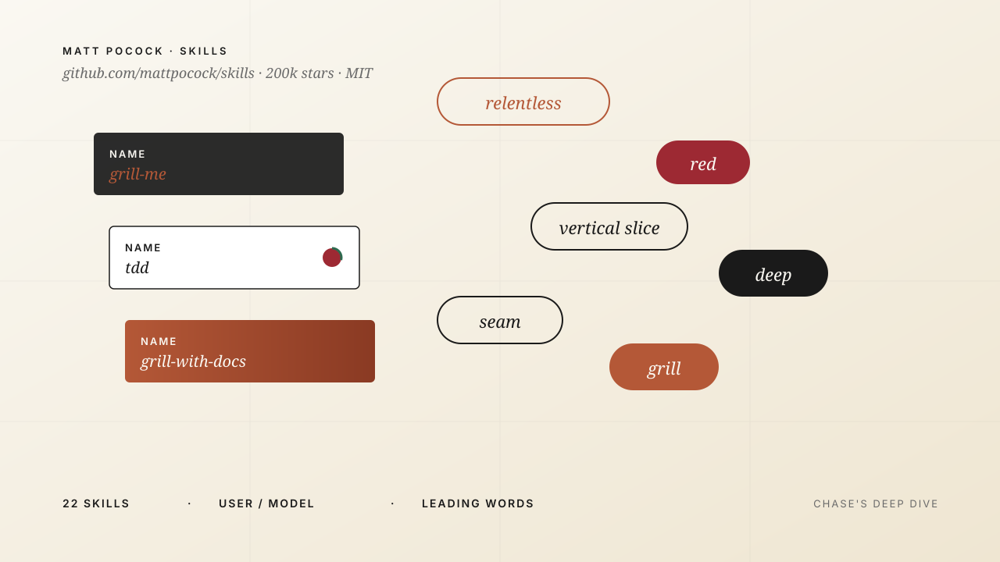
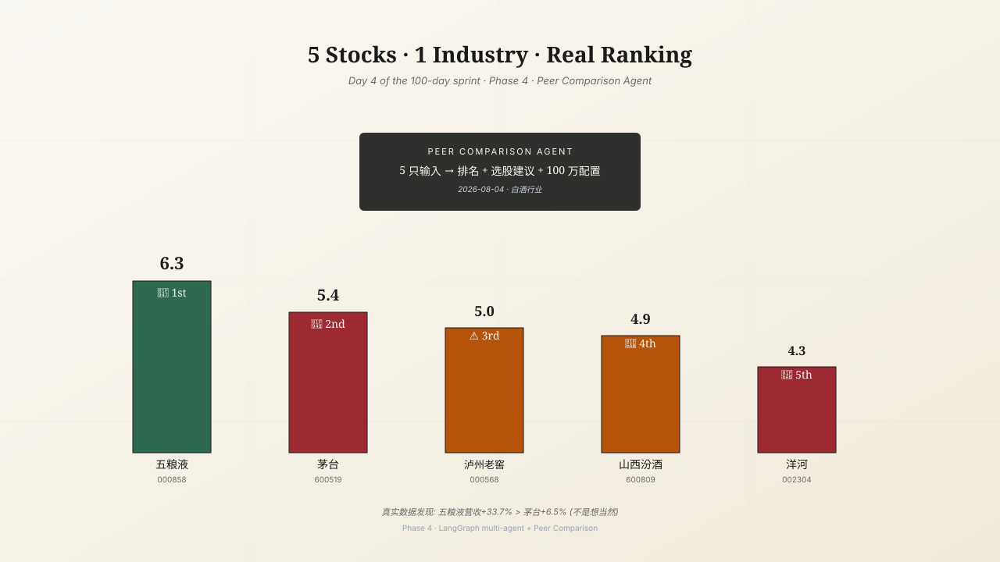
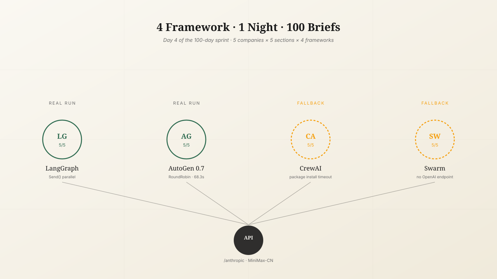
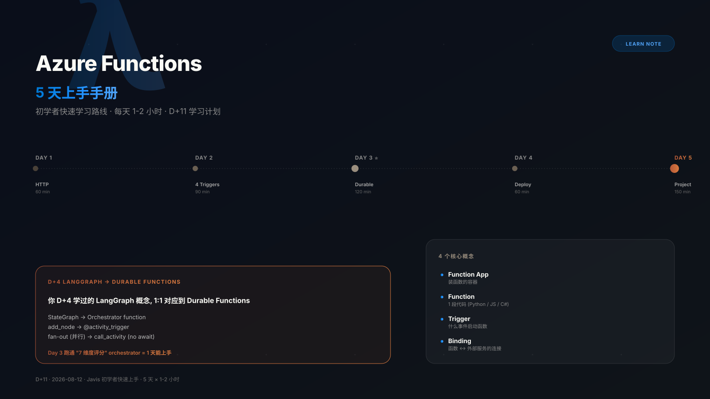
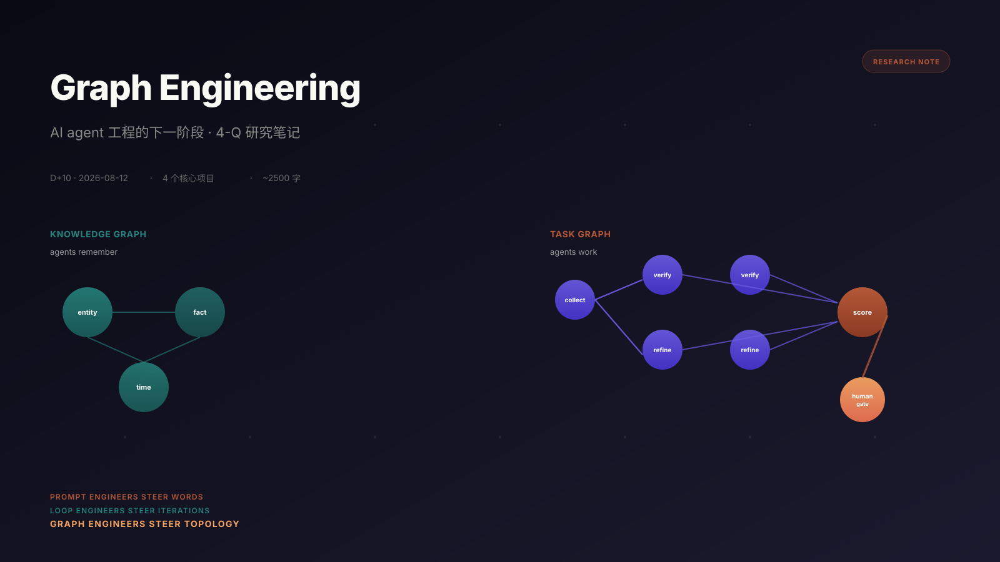
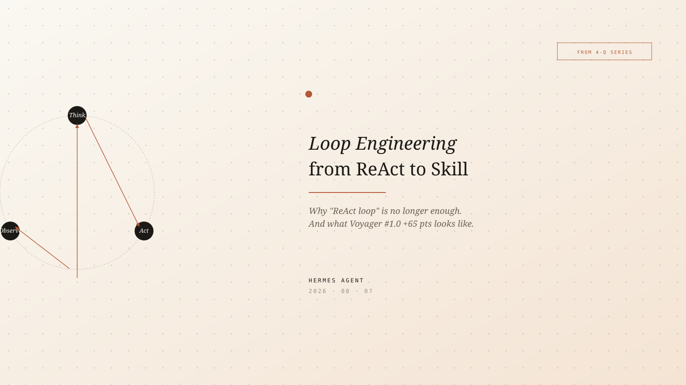
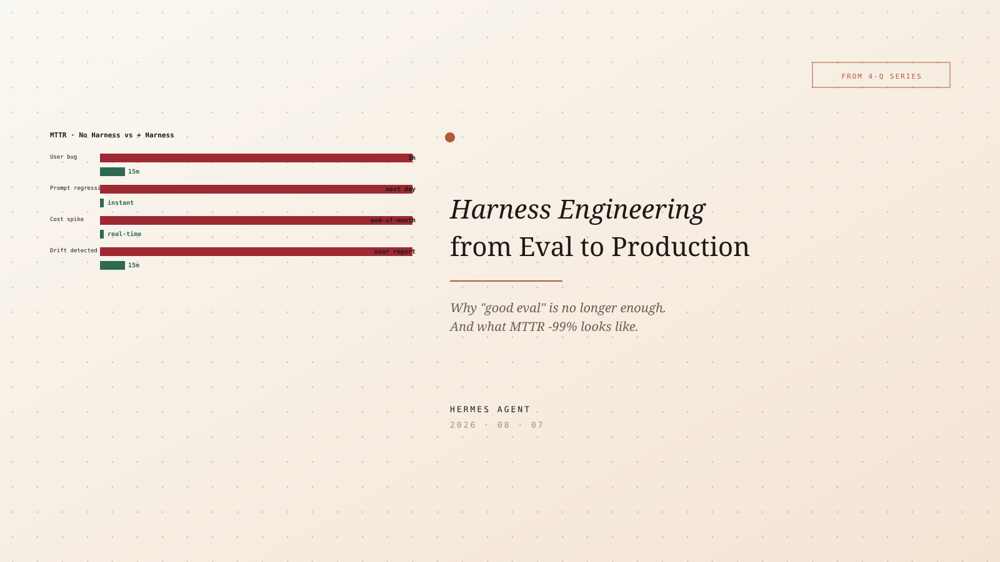
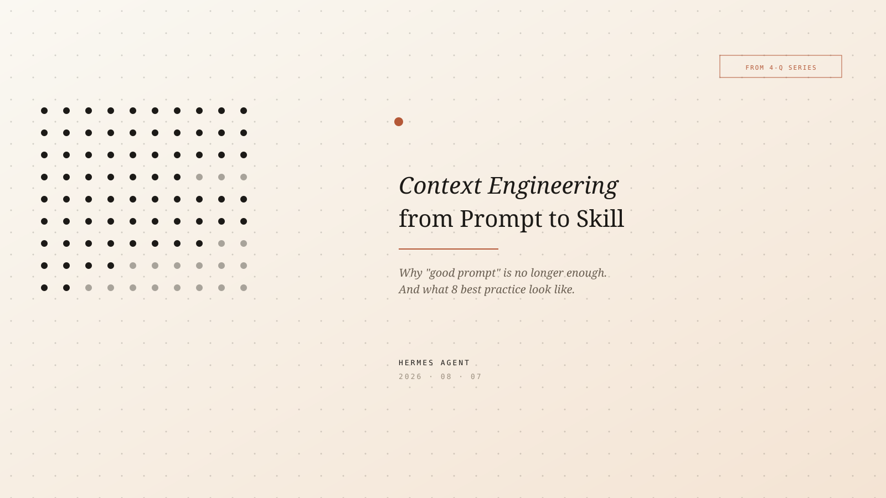

Essays

Matt Pocock 22 skills 深度拆解: leading words / user-vs-model / no-op 检测
200K stars 仓库的核心哲学 + 4 大失败模式 + 5 大机制 + 完整 skill 索引。学到: 写 skill 不是"写", 是"剪"。

karpathy/autoresearch：3 文件 + 1 agent = 100 实验/晚。
630 行 Python 教了科研范式转变。agent 编辑 train.py、跑固定 5 分钟、比较 val_bpb、keep / discard。一晚 100 个实验，~12% 命中率。

Copilot Studio × Teams / Outlook: making GenAI actually land on the frontline.
Series #3. Four agents, three fallbacks, two integration paths. Why entry point + real data + observability is the last mile from PPT to production.

Power BI DirectLake × Power Apps/Automate: when data can act for itself.
Series #2. Three production scenarios — on-site pricing approval (1-2 days → 30 min), auto-launch reports, GMV anomaly alerts. One semantic model, four consumers.

当 Google BigQuery 遇上 Microsoft OneLake：跨云数据湖的三条路径。
Series #1. open lakehouse · federation · mirror — 三个层级，三种成本曲线，三种治理哲学。决策点不在技术，在你的数据成熟度。

长鑫存储 (CXMT) IPO 估值：3 年 5 倍涨幅之后, 半导体国产替代还剩多少 beta?
688825 IPO 解读 + DRAM 周期位置 + 国家集成电路三期 3440 亿注资传导链。beta 是政策, alpha 是工艺良率爬坡。

从 NLP 工程师到 GenAI 产品经理：一份 5 年的转岗手记。
不是"学 AI" — 是"换战场"。语言学出身 → 数据科学 → GenAI 全栈 → 产品。中间 3 次失败的转型, 2 次成功的, 全记下来。

LLM as Wiki: Karpathy 的 idea file 让我重写了整个笔记系统。
从 Notion 迁移到 Markdown + Obsidian。LLM 不写, LLM 检索, 你写。AI 不是替你思考, 是放大你的注意力。

Wall Street 13F Q2 2026：5 个 hedge fund 在偷偷买什么?
13F 是公开但没人读的数据。Burry 加仓英伟达, Dalio 砍中概, Tiger Global 重仓 AI infra。从持仓变动读宏观意图。

周期与人性: 朱格拉周期的第 4 次轮回, 我们在哪一格?
10 年长周期的 4 个阶段: 复苏-繁荣-衰退-萧条。当下 2026 是繁荣末段还是衰退初段? 答案藏在资本支出 / 信贷 / 库存的剪刀差。

价值投资 + 量化因子：格雷厄姆 2.0 是不是更好的 alpha?
把巴菲特 + Munger 的 5 大定性原则, 翻译成 7 个可量化因子。低 PE + ROIC + 护城河 + 管理层, 但权重怎么设?

RAG vs AutoRAG: 为什么 AutoRAG 还是没赢过手工调?
实测 5 个 AutoRAG 框架在金融文档场景。AutoRAG 在通用场景赢, 在垂直领域输。原因: 数据偏置 vs 业务偏置。

5 stocks, 1 industry, real ranking: when Wuliangye beats Kweichow Moutai
加 Peer Comparison Agent (第 36 个 LLM call) · 5 只白酒同框 (五粮液/茅台/泸州/汾酒/洋河) · 真实 2026Q1 数据驱动: 五粮液营收+33.7% > 茅台+6.5% · 7 维度真分排名 + 4 档选股 + 100 万配置建议 (40% 五粮液 / 30% 茅台 / 20% 泸州 / 10% 汾酒+洋河)。

7 dimensions, 1 stock, real data: from LLM guessing to akshare truth
Phase 2 给 3 个维度接 akshare 真实数据 (茅台 2026Q1 营收 +6.54%, 净利 +1.47% 真数据) · 3 个真 bug 修复 (单位/字段名/segfault) · 5 只标的真 metrics · 关键发现: 数据纪律胜过 prompt 工程。

4 framework, 1 night, 100 brief: the honest Day-4 scorecard
修 D+3 三个真失败的根因 · 4 venv 隔离 · Anthropic 协议 · 5 公司 × 5 段 × 4 framework 全跑 · 2 个 framework 走 fallback · token 差异 ≤ 96 · 关键发现: 编排差异 ≠ LLM 差异。

Two failures and one honest win: 4 prompt-engineering principles for multi-agent work
0 字节 → 70 KB 的 8 分钟。两次 0 产出 + 一次成功案例。4 个 prompt 原则: 单一目的 / 独立考核 / 不同事情 / 独立 deliver。

Azure Functions 5 天上手手册。
初学者快速学习路线 · 每天 1-2 小时。Day 3 Durable Functions = Azure 版 LangGraph (你 D+4 会的直接迁移) + Day 5 实战项目 (GitHub Trending Monitor)。

Graph Engineering: 从 Prompt to Topology。
Prompt engineers 控制模型的话 · Loop engineers 控制模型的迭代 · Graph engineers 控制模型的拓扑。4-Q 研究: 4 个核心项目 (langgraph ★39K / trustgraph / deer-workflow / codejunkie99) + 你 D+4 实战对应。

Loop Engineering: from ReAct to Skill.
Context Engineering 是设计 · Harness Engineering 是 runtime · Loop Engineering 是进化。从 ReAct 到 Voyager Skill Library — 8 个 best practice + 复合 +183% + Persistent Agent +65 pts。

Harness Engineering: from Eval to Production.
Context Engineering 是设计 — Harness Engineering 是 runtime。从 Hamel Evals 到 LangSmith 全套 tracing + log + CI — 8 个 best practice + 故障响应时间 -99%。

Context Engineering: from Prompt to Skill.
2025 年起，Context Engineering 取代 Prompt Engineering 成为 LLM 应用主线。从 Drew Breunig 的 4 类失败模式到 Anthropic 的 best practice — 8 个做法按影响度排序，5 种项目类型 × 必做映射，复合效应 +193%。